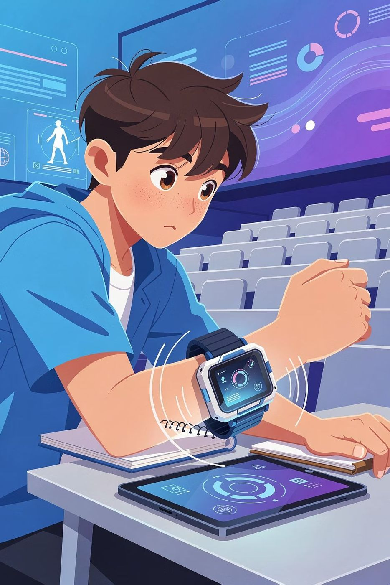
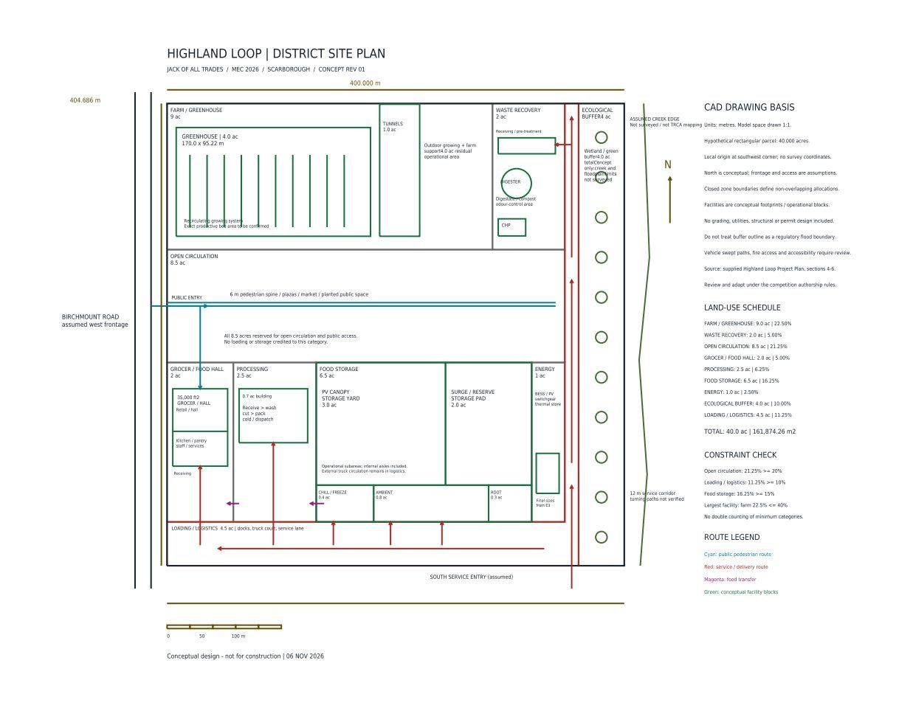

FocusSync
A mobile and smartwatch companion that keeps ADHD learners awake and engaged in lectures using live AI transcription, biometric sleep detection, and micro-questions.
View project
Biomedical Engineering student at Toronto Metropolitan University. I lead teams that take a need from research to a working prototype and a clear pitch.
Led project management for a team of 4 and delivered the winning pitch for FocusSync. Read the case
Placed fourth with The Highland Loop, a 40-acre urban food security district for Scarborough. Read the case
Dean's List for both 2024 to 2025 and 2025 to 2026.
A mobile and smartwatch companion that keeps ADHD learners awake and engaged in lectures using live AI transcription, biometric sleep detection, and micro-questions.
View project
A circular food, waste, and energy district on 40 acres in Scarborough, designed within a $50M budget with a team of six.
View project
A working Arduino heart rate monitor that reads a pulse sensor and shows BPM on an LCD. It works on any appendage with blood flow, not just a fingertip.
View project
A design team building an exoskeleton to assist firefighters.
Coordinated large conferences across subteams and created promotional material that drove registration.
Connected biomedical engineering students across all years and delivered course feedback to faculty.
Coordinated recruitment and orientation events reaching 200+ students, delivered public speaking presentations, and ran social media accounts.
Run the till and customer service for 100+ customers per shift while stocking and organizing inventory.
Bachelor of Engineering, Biomedical Engineering, 2024 to 2029. cGPA 3.68 / 4.33.
SolidWorks, MATLAB, AutoCAD, Python, C/C++, HTML, Adobe Creative Cloud, MS Office, Excel, soldering, 3D printing.